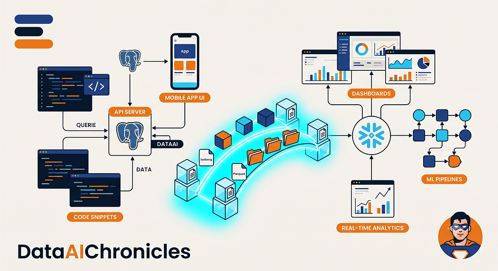
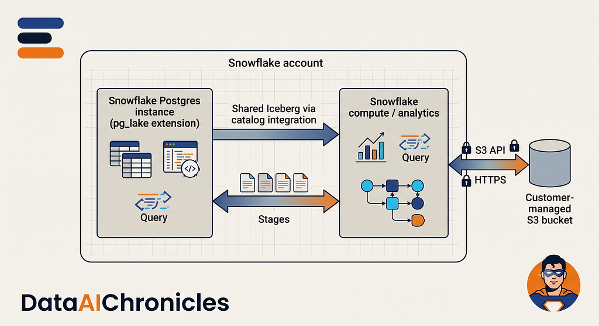
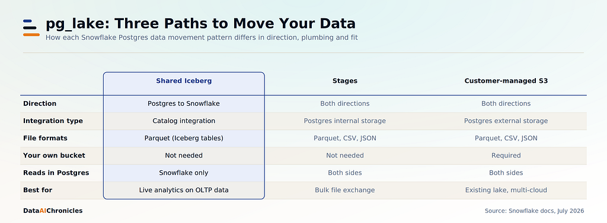
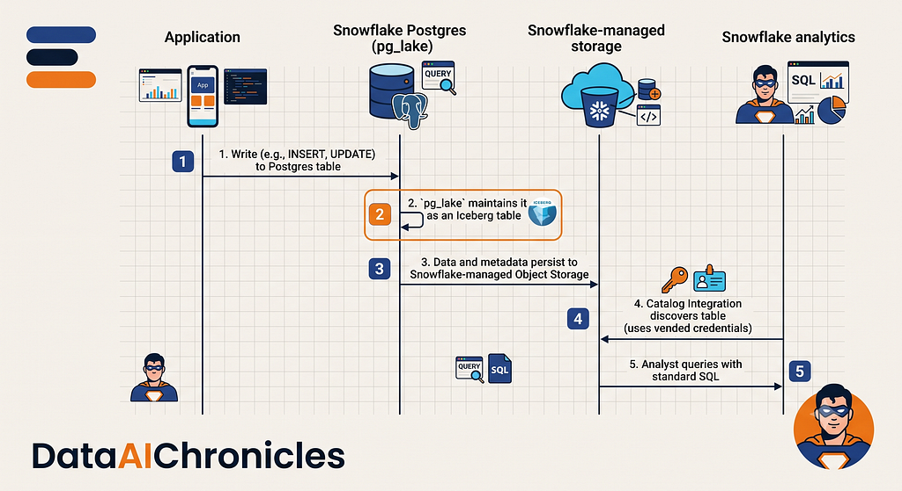
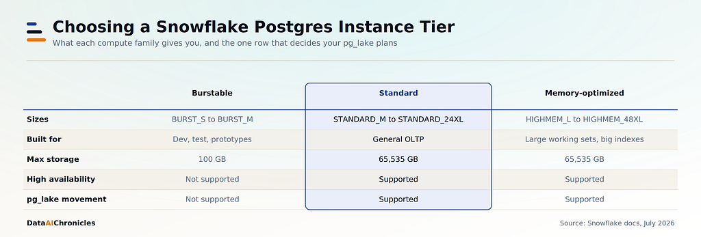
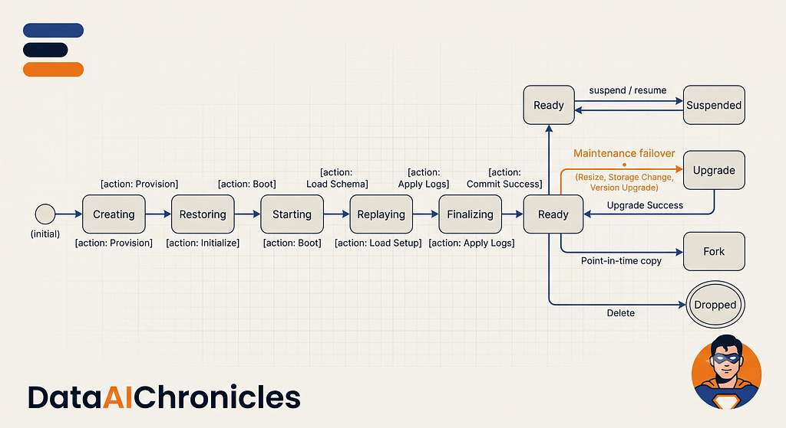
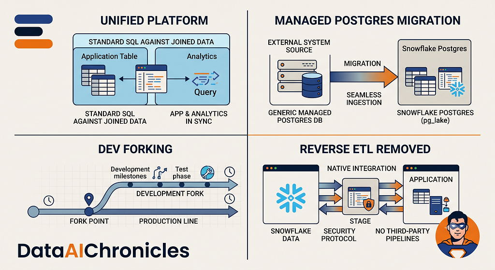
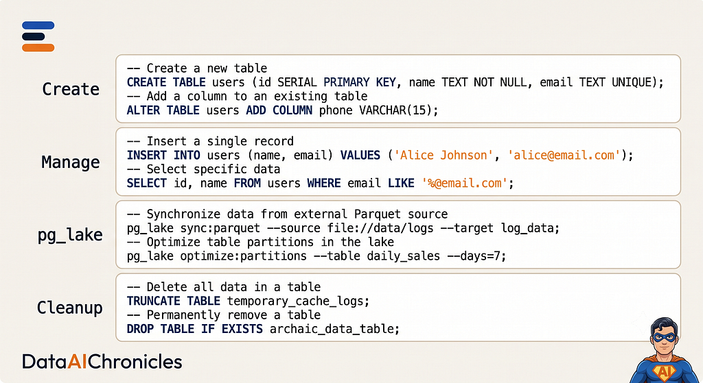

Snowflake Postgres正式可用：Postgres与Snowflake原生集成
DataHot 速览
Snowflake Postgres于2026年2月正式可用，是运行在Snowflake账户内的全托管PostgreSQL实例，支持16至18版本，并通过pg_lake扩展以Apache Iceberg和Parquet格式实现数据互通。作者实测确认这是真正的Postgres，psql客户端、ORM和现有迁移均可直接使用。该方案消除了传统CDC管道、凭据轮换、schema漂移和延迟问题，让Postgres与Snowflake从两套系统变成共享地址的组件。
为什么值得关注：数据从业者应关注这一数据库与数仓集成的新范式，或可大幅降低ETL维护成本与数据一致性风险。
原文
I have lived this story more times than I would like to admit. The application runs on Postgres. The analytics team runs on Snowflake. Between them sits a graveyard of ETL jobs, managed connector syncs, and stale replica databases that lag anywhere from five minutes to five hours behind reality. Every time someone asked me, “Why doesn’t the dashboard match the app?” I winced, because I knew the answer was going to take a week to explain and a quarter to fix.
So when Snowflake Postgres went generally available in February 2026, I did what I suspect you would do: I stopped reading the marketing page and started provisioning instances to find out where the seams are.
What I found is that Postgres and Snowflake are no longer two systems connected by duct tape. They are roommates sharing an address. This is a fully managed PostgreSQL instance, major versions 16 through 18, running inside your Snowflake account, with an extension called pg_lake that moves data between the two through Apache Iceberg and Parquet.
This is not a compatibility layer and not a wire protocol emulator. It is real Postgres. My psql client connected to it, my ORM worked unchanged, and my existing migrations ran as they were.

The Problem Was Never Tooling
You know the stack, because it is almost everyone’s stack. Postgres handles the OLTP workload: signups, orders, inventory updates. Snowflake handles the OLAP workload: cohort analysis, revenue forecasting, operational dashboards.
Between them, I used to maintain four things I resented:
- CDC pipelines that broke silently, and only announced themselves through a Monday morning number that looked slightly wrong
- Two credential sets on two rotation schedules
- Schema drift detection, because someone added a column in Postgres and did not tell the data team
- A latency budget I could never quite satisfy, since “near real time” means something different to every VP who says it
For years I treated this as a tooling problem and kept swapping tools. It is not a tooling problem. It is a topology problem. You have two systems that both claim to hold the truth, and you have built an entire engineering discipline around reconciling them.
What Snowflake Postgres Actually Gives You
Snowflake Postgres provisions a dedicated Postgres server on its own virtual machine, managed by Snowflake, running in an isolated private network. It is available on AWS and Azure. Google Cloud is not supported yet, which is the first thing I check whenever someone asks me if they can adopt it.
The parts that matter to me operationally:
- Managed infrastructure. Snowflake handles patching, backups, and storage scaling.
- High availability. A standby instance in a separate availability zone with automatic failover, available on Standard and Memory-optimized tiers.
- Point-in-time recovery. Fork an instance to any point within a 10 day retention window.
- Read replicas. Read-only copies kept continuously in sync, useful for offloading reporting.
- PgBouncer built in. Connection pooling without running your own pooler.
- Private connectivity. Firewall rules or Private Link.
- Custom server settings. Pass Postgres and PgBouncer configuration through POSTGRES_SETTINGS.
Creating an instance felt familiar enough that I got it wrong the first time by assuming too much:
CREATE POSTGRES INSTANCE my_app_db
COMPUTE_FAMILY = 'STANDARD_M'
STORAGE_SIZE_GB = 200
AUTHENTICATION_AUTHORITY = POSTGRES_OR_SNOWFLAKE
POSTGRES_VERSION = 17
HIGH_AVAILABILITY = TRUE
NETWORK_POLICY = 'pg_access_policy'
POSTGRES_SETTINGS = '{"postgres:work_mem" = "128MB", "pgbouncer:default_pool_size" = "200"}'
COMMENT = 'Orders service primary';Three things I want to flag from that statement, because each one cost me time.
- AUTHENTICATION_AUTHORITY is required, not optional. POSTGRES means only Postgres passwords work. POSTGRES_OR_SNOWFLAKE additionally allows short-lived Snowflake access token passwords, which is how I let data engineers connect using their existing Snowflake identity instead of minting another password.
- POSTGRES_SETTINGS keys need a component prefix. They are postgres: for server settings and `pgbouncer:` for pooler settings. Plain `work_mem` will not do what you expect. One warning on the syntax above: the reference pages for both CREATE and ALTER POSTGRES INSTANCE document this value with `=` between key and value rather than the `:` you would expect from the JSON they describe it as. I have reproduced the documented form here. If your client rejects it, try standard JSON with a colon before you go hunting elsewhere.
- Save the credentials from the output. The CREATE statement returns an access_roles column containing the passwords for the snowflake_admin and application roles. You cannot retrieve them later. I lost a set on my first instance and had to reset access to recover.
The instance takes time to build. DESCRIBE POSTGRES INSTANCE shows an operations field you can poll until the state reaches READY.

The Network Policy Trap
This one deserves its own heading because it is the single most common way I have seen people conclude the product is broken.
Without a network policy attached, the instance accepts no incoming connections. Not restricted connections. None. You can still see it through SHOW and DESCRIBE, which is exactly what makes it confusing: the instance looks healthy and simply refuses to talk to you.
CREATE NETWORK POLICY pg_access_policy
ALLOWED_IP_LIST = ('10.0.0.0/8', '172.16.0.0/12');
ALTER POSTGRES INSTANCE my_app_db
SET NETWORK_POLICY = 'pg_access_policy';Policy changes can take up to two minutes to take effect, so give it a moment before you start debugging your client.
pg_lake: Three Paths, One Extension
pg_lake is where this stops being “managed Postgres” and starts being interesting. Snowflake open-sourced under the Apache license, built on work Crunchy Data had done for years before joining Snowflake. In Snowflake, Postgres comes preinstalled, and you simply enable it.
There are three supported movement patterns, and picking the wrong one wasted an afternoon for me before I mapped them out properly.

Shared Iceberg moves data from Postgres to Snowflake through a catalog integration, needs no bucket of your own, and suits live analytics on operational data. Stages use a Postgres internal storage integration for bidirectional Parquet, CSV and JSON exchange readable from both sides. Customer-managed S3 uses an external storage integration and requires your own bucket, which pays off when you already run a data lake or need multi-cloud reach.
Before you pick any of them, check your tier. pg_lake data movement requires a STANDARD or HIGH MEMORY instance. Burstable instances are not supported. Worse, if you downgrade an instance that is already using pg_lake to burstable without first removing the tables in object storage, you can lose that data. I now treat tier selection as a data movement decision rather than a cost decision.
Shared Iceberg: The Path I Would Start With
This is the zero infrastructure option. Postgres acts as the Iceberg catalog, Snowflake reads through a catalog integration, and storage is handled for you. No S3 bucket, no IAM role, no external volume, because the catalog integration uses vended credentials to reach the data and metadata automatically.
On the Postgres side, I enable the extension and create the table with the Iceberg access method:
CREATE EXTENSION pg_lake CASCADE;
CREATE TABLE orders (
order_id bigint,
customer_id bigint,
status text,
total_amount numeric(12,2),
created_at timestamptz
) USING iceberg;On the Snowflake side, I create the catalog integration and then an Iceberg table that references the Postgres table:
CREATE OR REPLACE CATALOG INTEGRATION pg_catalog
CATALOG_SOURCE = SNOWFLAKE_POSTGRES
TABLE_FORMAT = ICEBERG
CATALOG_NAMESPACE = 'public'
REST_CONFIG = (
POSTGRES_INSTANCE = 'my_app_db'
CATALOG_NAME = 'postgres'
ACCESS_DELEGATION_MODE = VENDED_CREDENTIALS
)
ENABLED = TRUE;
CREATE OR REPLACE ICEBERG TABLE orders
CATALOG = 'pg_catalog'
CATALOG_TABLE_NAME = 'orders'
AUTO_REFRESH = TRUE;
-- Now query operational data with no pipeline in between
SELECT order_id, status, total_amount
FROM orders
WHERE created_at > DATEADD('hour', -1, CURRENT_TIMESTAMP());ACCESS_DELEGATION_MODE must be VENDED_CREDENTIALS. The external volume credentials mode is not supported here, and you do not need to specify REST_AUTHENTICATION because Snowflake handles authentication to the instance itself.
If you would rather not declare tables one at a time, a catalog-linked database discovers and syncs them for you:
CREATE DATABASE my_postgres_db
LINKED_CATALOG = (
CATALOG = pg_catalog
ALLOWED_WRITE_OPERATIONS = NONE
);ALLOWED_WRITE_OPERATIONS = NONE is required, which points at the two caveats worth internalising.
Tables created this way are read-only in Snowflake. Postgres owns them. If your mental model is a two way sync, adjust it.
Refresh is metadata polling, not change notification. You can refresh on demand with ALTER ICEBERG TABLE orders REFRESH, or tune how often Snowflake polls:
ALTER CATALOG INTEGRATION pg_catalog SET REFRESH_INTERVAL_SECONDS = 60;So this is not zero latency. It is latency you control with a number instead of a pipeline, which in my experience is the more valuable property.

Stages: Getting Results Back Into Postgres
Shared Iceberg is one directional. When I needed to push analytical output back into the application database, such as churn scores or ML predictions, stages were the answer.
Setup takes two objects on the Snowflake side:
CREATE STORAGE INTEGRATION my_pg_stage_integration
TYPE = POSTGRES_INTERNAL_STORAGE
POSTGRES_INSTANCE = 'my_app_db';
CREATE STAGE my_pg_stage
RELATIVE_URL = '/customer_scores'
STORAGE_INTEGRATION = my_pg_stage_integration;Note that URL, ENCRYPTION and DIRECTORY are disallowed on a stage backed by a Postgres internal storage integration, and the integration appends a /files subpath to the base location automatically.
Then I move files with COPY FILES and read them from Postgres:
-- In Snowflake: move ML output into the Postgres managed storage
COPY FILES
INTO @my_pg_stage
FROM @ml_results_stage;
-- In Postgres: load the files that just landed
COPY customer_scores FROM '@STAGE/customer_scores/scores*.parquet';@STAGE is a preconfigured placeholder for the stage location on the Postgres side. The same mechanism works in reverse: write from Postgres, then COPY FILES into a Snowflake stage.
Customer-Managed S3: When You Already Have a Lake
If you have existing lake infrastructure, pg_lake will write to your own bucket through an external storage integration. This path has the most setup, since it involves an IAM policy, an IAM role, and a trust relationship using the external ID that Snowflake generates for you.
CREATE STORAGE INTEGRATION my_pg_lake_integration
TYPE = POSTGRES_EXTERNAL_STORAGE
STORAGE_PROVIDER = 'S3'
ENABLED = TRUE
STORAGE_AWS_ROLE_ARN = 'arn:aws:iam::123456789012:role/snowflake_pg_lake_role'
STORAGE_ALLOWED_LOCATIONS = ('s3://my-datalake/pg-exports/');
-- The step people forget: attach it to the instance
ALTER POSTGRES INSTANCE my_app_db
SET STORAGE_INTEGRATION = my_pg_lake_integration;Creating the integration is not enough. Until you attach it to the instance, the credentials are never synchronized to the Postgres control plane, and pg_lake cannot see your bucket. Only one location is allowed per Postgres storage integration, and the bucket must sit in the same region as your Snowflake account.
Then set the default Iceberg location inside Postgres, per database, so it survives new sessions:
ALTER DATABASE my_database
SET pg_lake_iceberg.default_location_prefix = 's3://my-datalake/pg-exports';I verify the wiring before trusting it, which takes one query:
SELECT * FROM lake_file.list('s3://my-datalake/pg-exports/*');An empty result means an empty bucket. An error means your IAM trust policy is wrong.
The Newer Answer: Postgres Data Mirroring
Everything above was designed around open table formats. At Summit 2026 Snowflake shipped something that attacks the CDC problem more directly, and any post about retiring your pipeline in 2026 would be incomplete without it.
Postgres Data Mirroring continuously replicates tables from a Snowflake Postgres instance into a Snowflake database, using change data capture underneath, with no connector to deploy and no external service to operate. It builds on pg_lake plus a snowflake_cdc extension, and you create a mirror with a stored procedure:
CALL snowflake.postgres.create_mirror(
mirror_name => 'orders_mirror',
postgres_instance => 'my_app_db',
postgres_database => 'postgres',
target_database => 'ORDERS_MIRROR',
postgres_tables => ['public.orders', 'public.customers'],
postgres_schemas => NULL,
refresh_interval => '1 minute'
);Schema changes such as added, renamed and altered columns propagate automatically, and deletes are handled rather than silently skipped.
Treat this section as directional, not final. Mirroring is in public preview, it requires a STANDARD or HIGH MEMORY tier like the rest of pg_lake, and preview syntax moves. Check the current documentation before you put it in a design document.
How I choose between them: mirroring keeps a synchronised copy on each side and is the closer replacement for a CDC tool. Shared Iceberg keeps one copy in one open format that both engines read. If your goal is retiring a connector, look at mirroring. If your goal is an open lakehouse where Snowflake is one of several readers, look at shared Iceberg.
Sizing, and the One Row That Decides Everything
There are three compute families. I have deployed on all three, and the tier decision is more consequential than it looks because it silently gates features.

Burstable runs BURST_S to BURST_M, suits dev and test, caps at 100 GB, and supports neither high availability nor pg_lake data movement. Standard runs STANDARD_M to STANDARD_24XL for general OLTP with both features supported. Memory-optimized runs HIGHMEM_L to HIGHMEM_48XL for large working sets and big indexes, also with both supported.
Storage is set with STORAGE_SIZE_GB and accepts 10 to 65,535, so this is a large ceiling rather than no ceiling. Decreases are allowed, but the new size must be at least 1.4 times current disk usage so there is headroom before an automatic increase kicks in.
Burstable instances also have burstable vCPUs. Sustained use above the CPU baseline depletes credits and triggers rate limiting, which shows up as a sudden performance drop with no other obvious cause. If you are benchmarking on burstable, that is worth knowing before you draw conclusions.
Day-to-Day Operations
Resizing is a maintenance operation, not a free action. Compute family, storage size and Postgres version changes are grouped as upgrade operations, and they require a brief service interruption through a failover. Your application needs to reconnect automatically. This surprised me the first time, so I plan resizes now rather than firing them off mid afternoon.
ALTER POSTGRES INSTANCE my_app_db
SET COMPUTE_FAMILY = 'STANDARD_L'
APPLY IMMEDIATELY;If the instance has a maintenance window set, changes wait for the next window unless you pass APPLY IMMEDIATELY. You can also schedule with APPLY ON '<timestamp>' up to 72 hours ahead. The window controls when changes land, not whether the instance is running.
Suspend stops compute billing, not storage billing. The virtual machine is deactivated while the disk image is retained, and existing backups are kept.
ALTER POSTGRES INSTANCE my_app_db SUSPEND;
-- later
ALTER POSTGRES INSTANCE my_app_db RESUME;Forking is my favourite feature in the whole product. It creates a full, independent copy at a point in time using point-in-time recovery, up to 10 days back:
-- Fork at a specific moment
CREATE POSTGRES INSTANCE incident_debug
FORK my_app_db
AT (TIMESTAMP => '2026-07-15 14:30:00'::TIMESTAMP_NTZ);
-- Or fork 30 minutes ago, which is usually what I want during an incident
CREATE POSTGRES INSTANCE recovery_fork
FORK my_app_db
AT (OFFSET => -1800);A fork performs a complete copy through backup and write-ahead log replay, so it is genuinely separate. Dropping the source does not affect it. Run destructive queries against it, test the migration, reproduce the bug, then drop it. Two details caught me out: forking requires OWNERSHIP on the source instance, and the fork inherits the source’s credentials as they were at that point in time, so you may want to reset access before handing it to anyone.
Rotating credentials uses RESET ACCESS, which returns the new password:
ALTER POSTGRES INSTANCE my_app_db RESET ACCESS FOR 'snowflake_admin';Renaming an instance changes its Snowflake identifier but not its connection hostname, so applications keep working.

Where This Earns Its Place
Unified OLTP and analytics. The application writes to Postgres, analysts query Snowflake, and the connector between them goes away. One platform, one bill, one governance model.
Migration from RDS or Cloud SQL. You are already paying for managed Postgres somewhere. This gives you the same Postgres with a direct bridge to the warehouse. Standard tooling works: pg_dump and pg_restore for most databases, COPY for the large ones, and no application code changes for most workloads.
Development environments through forking. Fork production to any point in the last 10 days. Full copy, isolated, disposable. I have replaced a four hour sanitised dump restore with this, and it changed how often the team was willing to test against realistic data.
Reverse ETL elimination. Instead of pushing results from Snowflake back to the application through a separate tool, write to a stage and load from Postgres. The application queries Postgres as it always has and never learns that the data originated in Snowflake.

What I Would Still Check Before Committing
Snowflake Postgres itself is generally available, but not every surrounding piece is at the same maturity, and conflating the two is how architecture documents go stale.
- AWS and Azure only. Google Cloud is not supported. Check the regional availability table, since the region list is narrower than Snowflake’s full footprint.
- Check the status of each piece separately. The pg_lake data movement paths no longer carry a preview banner, though the STORAGE_INTEGRATION parameter used for customer-managed storage is still flagged as preview in the SQL reference. Availability is moving quickly enough that the banner on the page you are reading beats any blog post, including this one.
- Postgres Data Mirroring is in public preview. Design around it with that in mind.
- Burstable is a genuine dead end for this architecture. No high availability, no pg_lake, 100 GB ceiling.
- Shared Iceberg tables are read-only in Snowflake and refresh through polling.
- Spatial types need conversion. Geometry and geography columns arrive in Iceberg as well-known binary, so you convert them with ST_GeometryFromWKB or ST_GeographyFromWKB. Specialised types such as CircularString and CurvePolygon will not read at all, since Snowflake supports point, linestring and polygon.
- Verify your own account eligibility and pricing before planning. Consumption covers compute, storage and data transfer separately, and instance credit rates vary by size.
None of these are architectural dead ends. They are timing questions, and the honest version of this post is that the platform is moving fast enough that you should check the documentation rather than trust any blog post, including this one, on availability specifics.
Quick Reference
-- Create an instance
CREATE POSTGRES INSTANCE <name>
COMPUTE_FAMILY = '<family_size>'
STORAGE_SIZE_GB = <10..65535>
AUTHENTICATION_AUTHORITY = { POSTGRES | POSTGRES_OR_SNOWFLAKE }
POSTGRES_VERSION = { 16 | 17 | 18 }
NETWORK_POLICY = '<policy>';
-- Resize (maintenance failover, brief interruption)
ALTER POSTGRES INSTANCE <name>
SET COMPUTE_FAMILY = '<new_size>' APPLY IMMEDIATELY;
-- Suspend and resume (compute billing only)
ALTER POSTGRES INSTANCE <name> SUSPEND;
ALTER POSTGRES INSTANCE <name> RESUME;
-- Fork, point in time, up to 10 days back
CREATE POSTGRES INSTANCE <fork_name>
FORK <source> AT (TIMESTAMP => '<ts>'::TIMESTAMP_NTZ);
CREATE POSTGRES INSTANCE <fork_name>
FORK <source> AT (OFFSET => -1800);
-- Rotate credentials
ALTER POSTGRES INSTANCE <name>
RESET ACCESS FOR { 'snowflake_admin' | 'application' };
-- Enable pg_lake, inside Postgres
CREATE EXTENSION pg_lake CASCADE;
CREATE TABLE <t> (...) USING iceberg;
-- Read it from Snowflake
CREATE OR REPLACE CATALOG INTEGRATION <name>
CATALOG_SOURCE = SNOWFLAKE_POSTGRES
TABLE_FORMAT = ICEBERG
CATALOG_NAMESPACE = 'public'
REST_CONFIG = (
POSTGRES_INSTANCE = '<instance>'
CATALOG_NAME = 'postgres'
ACCESS_DELEGATION_MODE = VENDED_CREDENTIALS
)
ENABLED = TRUE;
CREATE OR REPLACE ICEBERG TABLE <t>
CATALOG = '<catalog>' CATALOG_TABLE_NAME = '<t>' AUTO_REFRESH = TRUE;
-- Inspect and drop
DESCRIBE POSTGRES INSTANCE <name>;
SHOW POSTGRES INSTANCES;
DROP POSTGRES INSTANCE <name>;
One Thing to Do This Week
Create a STANDARD tier Snowflake Postgres instance, attach a network policy, point your staging application at it, enable pg_lake, create one table with USING iceberg, and read it from Snowflake through a catalog integration.
That is roughly thirty minutes of work, and at the end of it you will have proven the architecture with zero ETL jobs. Start on STANDARD rather than burstable, because burstable cannot run pg_lake at all, and discovering that halfway through the exercise is exactly the kind of afternoon I am trying to save you.
Your Favorite Database Just Moved Into Snowflake’s House was originally published in Snowflake Builders Blog: Data Engineers, App Developers, AI, & Data Science on Medium, where people are continuing the conversation by highlighting and responding to this story.